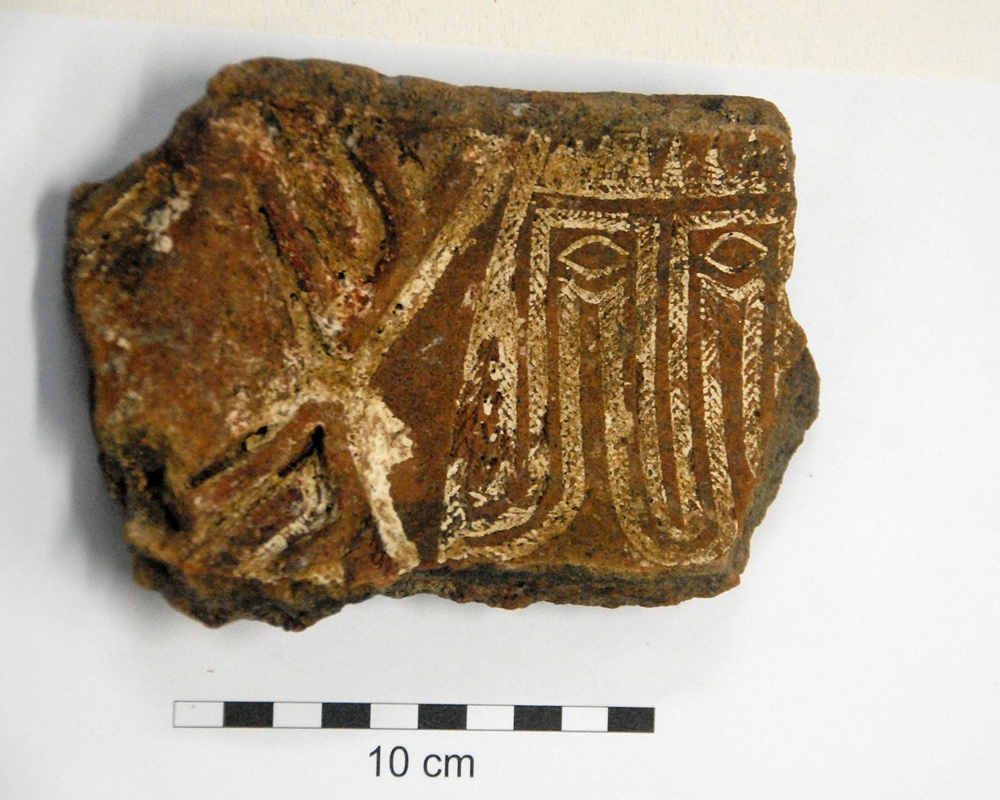

Deep dives / Australia & Pacific
Central & Eastern Polynesia: Taputapuātea, Eiao Adze Trade, Rapa Iti Forts & Rapa Nui
Across an ocean triangle twice the size of Asia, East Polynesian double-hulled voyagers knit distant Societies, Marquesas, Australs, Cooks, Mangareva, Pitcairn, and Rapa Nui into shared sacred and lithic spheres.
Taputapuātea *marae*, Tetiʻaroa atoll imports, Eiao quarry basalt network, Rapa Iti forts, Pitcairn/Mangareva sphere, and Rapa Nui's Anakena/Rano Raraku/*mataʻa* sequence.
Landscape and objects


Anthropomorphic designs on Lapita potsherds are rarely found in Fiji, suggesting the people who made this had arrived comparatively recently from Papua New Guinea, about 3100 years agoPatrick Nunn · Image source · CC BY-SA 4.0 · Full-size image

The whole area in view
Unwrapped Central & Eastern Polynesia from Cook and Society Islands (162°W) across Marquesas and Australs to Rapa Nui (109°W).
Taputapuātea & Tetiʻaroa (Society Islands)
c. 1000–1900 CE
International *marae* at Opoa paired with atoll sites receiving sourced basalt from Raʻiatea, Tahiti, Eiao, and the Australs. [1] [2] [3]
-16.84°, -151.36°Eiao Island Basalt Quarry (Marquesas)
c. 1200–1550 CE
XRF-sourced fine phonolitic basalt quarry exporting adze blades >2,400 km southwest into the Societies, Tuamotus, and Cooks. [4] [5] [6]
-8.00°, -140.70°Rapa Iti Hilltop *Pā* Citadels (Australs)
c. 1400–1825 CE
Dry-stone summit fortresses crowding central ridges above terraced irrigated taro pondfields. [7] [8]
-27.60°, -144.33°Mangareva & Pitcairn Quarry
c. 1000–1500 CE
Museum and field basalt analyses uniting Pitcairn volcanic glass, Mangareva, and isolated Henderson Island prior to abandonment. [9] [10] [11]
-25.07°, -130.10°Rapa Nui (*Rano Raraku* & *Anakena*)
c. 1200–1900 CE
Monumental *moai* carving, freshwater-anchored *ahu*, rock-mulch gardens, and *mataʻa* re-analysis challenging classic 'ecocide' collapse. [12] [13] [14] [15] [16]
-27.12°, -109.29°
Voyaging spheres & divergent island trajectories
Geochemical fingerprinting across Tetiʻaroa, Mangareva, the Cook Islands, and Marquesan quarries proves Central East Polynesians operated deliberate two-way multi-archipelago trade networks between 1000 and 1550 CE before regional isolation. [2] [5] [17] [18]
In isolation across the far southeastern corner, Rapa Iti built densely fortified hilltop *pā* whereas Rapa Nui raised *moai* statues near coastal freshwater lenses and maintained cooperative rock-mulch farms well past 1722 until Peruvian blackbirding raids of 1862–1863. [7] [12] [19] [20]
| Archipelago / Node | Chronology | Material Signature | Sources |
|---|---|---|---|
| Taputapuātea & Tetiʻaroa | 1000–1900 CE | Imported basalt tools & regional *marae* confederation | [1] [2] |
| Eiao & Pitcairn Quarries | 1000–1550 CE | Fine-grained adzes traced across 2,400+ km | [4] [9] |
| Rapa Nui (*Ahu* / *Moai*) | 1200–1900 CE | Rock-mulch agriculture, obsidian exchange & *mataʻa* | [12] [21] |
Rapa Iti stone citadels vs Rapa Nui *moai* landscapes
Isolated after ~1500 CE, East Polynesian islands pursued striking political divergence—from densely terraced hilltop *pā* forts crowding remote Rapa Iti to Rapa Nui's ceremonial coastal *ahu* anchored near freshwater lenses. [7] [8] [19]
Reassessing *mataʻa* obsidian & ecological resilience
Modern morphometric studies of stemmed *mataʻa*, stable-isotope diets, and island-wide rock-mulch mapping challenge simple 'ecocide collapse' narratives on Rapa Nui prior to 1860s colonial kidnapping raids. [15] [12] [13]
Explore in the interactive atlas
Open this era on global Explore ↗ Open Australia & Pacific atlas ↗ Climate, sea level & ice-sheet context ↗
Continue exploring
- Aotearoa & Rēkohu: Polynesian Settlement, Pounamu Networks, Pā Fortifications & Wars — Rapid ~1280 CE founding settlement, Tūhua obsidian & *pounamu* trade, *pā* hillfort innovation, Musket Wars, New Zealand Wars, and Moriori survival.
- Hawaiʻi: Ahupuaʻa Landscapes, Mauna Kea Quarries, Heiau & Kingdom Unification — Alpine basalt workshops at 3,780 m, walled *loko iʻa* fishponds, irrigated taro *loʻi*, monumental *heiau* temples, and Kamehameha I unification.
- Fiji, Tonga & Samoa: Lapita Foundations, Fortified Chiefdoms & the Tuʻi Tonga Network — Lapita settlement at Nukuleka (~900 BCE) through monumental *langi* royal tombs, star mounds at Pulemelei, LiDAR earth forts, and basalt exchange.
Sources for this guide
- Bernard Salvat (2019) · The marae of Taputapuātea (Ra’iatea, Society Islands) in 2016: nature, age and origin of coral erected stones
- Aymeric Hermann (2019) · Geochemical sourcing of volcanic materials imported into Teti'aroa Atoll shows multiple long‐distance interactions in the Windward Society Islands, French Polynesia
- Paul Wallin (2025) · From ritual spaces to monumental expressions: rethinking East Polynesian ritual practices
- Michel Charleux (2014) · Non-destructive XRF Analyses of Fine-grained Basalts from Eiao, Marquesas Islands
- Andrew McAlister (2013) · The identification of a Marquesan adze in the Cook Islands
- Marshall I. Weisler (1996) · Interisland and interarchipelago transfer of stone tools in prehistoric Polynesia.
- Robert J. DiNapoli (2017) · East Polynesian Islands as Models of Cultural Divergence: The Case of Rapa Nui and Rapa Iti
- Seth Quintus (2022) · Materializations of variable power strategies and inequalities in Polynesia
- Emma Ash (2023) · The Auckland War Memorial Museum Collection of Stone Tools from Pitcairn Island, Southeast Polynesia
- Christopher Gregg Jennings (2023) · An archaeological review of Polynesian adze quarries and sources
- K. Horsburgh (2017) · Dispersal, Isolation, and Interaction in the Islands of Polynesia: A Critical Review of Archaeological and Genetic Evidence
- Dylan S. Davis (2024) · Island-wide characterization of agricultural production challenges the demographic collapse hypothesis for Rapa Nui (Easter Island)
- Robert J. DiNapoli (2021) · Approximate Bayesian Computation of radiocarbon and paleoenvironmental record shows population resilience on Rapa Nui (Easter Island)
- Carl P. Lipo (2025) · Megalithic statue (moai) production on Rapa Nui (Easter Island, Chile)
- Carl P. Lipo (2016) · Weapons of war? Rapa Nui mata'a morphometric analyses
- Christopher M. Stevenson (2015) · Variation in Rapa Nui (Easter Island) land use indicates production and population peaks prior to European contact
- Aymeric Hermann (2017) · Combined geochemical and geochronological analyses of stone artefacts provide unambiguous evidence of intra- and inter-island interactions in Polynesia
- Melinda S. Allen (2010) · Central East Polynesia: an introduction
- Robert J. DiNapoli (2019) · Rapa Nui (Easter Island) monument (ahu) locations explained by freshwater sources
- Gregory T. Cushman (2024) · Ecologies of Resilience
- Christopher M. Stevenson (2013) · Prehistoric Obsidian Exchange on Rapa Nui
- Catrine Jarman (2017) · Diet of the prehistoric population of Rapa Nui (Easter Island, Chile) shows environmental adaptation and resilience
- Christopher M. Stevenson (2018) · The temporal occurrence and possible uses of obsidian mata'a on Rapa Nui (Easter Island, Chile)
- Robert J. DiNapoli (2020) · Revisiting warfare, monument destruction, and the ‘Huri Moai’ phase in Rapa Nui (Easter Island) culture history
- Valentí Rull (2016) · Natural and anthropogenic drivers of cultural change on Easter Island: Review and new insights
- Robert J. DiNapoli (2021) · Triumph of the Commons: Sustainable Community Practices on Rapa Nui (Easter Island)
Sources checked and linked above; geological and historical dating methods follow the primary papers.